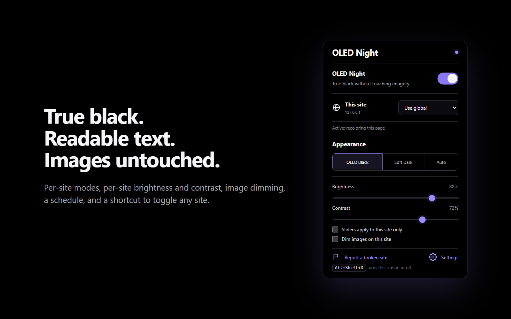

I just wanted everything actually black.
I've got an OLED monitor, and I wanted every site to be black. Not dark grey. Actually black, so the pixels are off.
Every dark mode extension I tried either left everything grey, or made sites dark and broke them: text I couldn't read, random white boxes, weird white gradients around chat boxes, charts turning into blank white shapes, Amazon photos turning into black squares. Some of them even made Gmail and ChatGPT lag.
So I made my own. Every time a site broke, I fixed it and added a test so it stays fixed. It's free and open source. Use it, change it, or tell me what's still broken.
- Text you can't read: dark grey on black, or light grey on white
- White gradients and glows around chats and headers
- Charts and dashboards with blank white fills
- A white flash every time a page loads
- Pages lagging while you scroll or type
- Product photos turning into black squares
- OLED Night fixes each of these, and a test suite that runs the real extension keeps them fixed
Black where it should be. Everything else intact.
Most dark modes run one filter over the whole page. OLED Night recolors each element on its own terms, so it can make careful choices.
True #000 black
Page backgrounds become real black, not dark grey, so OLED pixels actually turn off. Cards and panels keep a subtle lift so layouts stay readable.
Images untouched
Photos, video and artwork keep their true colors. Optionally dim them on bright sites.
Readable text, with emphasis kept
Main, secondary and muted text keep their levels instead of all turning one flat grey. Gmail's read and unread emails stay easy to tell apart.
Respects dark sites
On sites that are already dark, it only pushes their greys to true black and leaves the design alone.
Modern web apps
Charts, web components, embedded chat widgets and frames, and the newest CSS color formats are all handled.
Fast, and no white flash
Pages go black before they draw. Updates are batched, so busy apps like Gmail and ChatGPT stay smooth.
Per-site control
A mode for each site, plus that site's own brightness, contrast and image dimming.
Schedule & shortcut
Turn it on only at night, and press Alt+Shift+D to switch any site on or off.
Private by design
No servers, no analytics, no tracking. Settings sync only through your own Chrome profile.
Up and running in a minute.
Works in Chrome and in Chromium-based browsers: Edge, Brave, Arc, Opera and Vivaldi.
Install the extension
Install OLED Night from the Chrome Web Store for automatic updates.
Prefer a manual install? Download version 0.6.5 below.
- Download oled-night-0.6.5.zip and unzip it into a folder you'll keep, such as
Documents/OLED Night. - Open
chrome://extensions(oredge://extensions). - Turn on Developer mode.
- Click Load unpacked and pick the unzipped folder, the one that contains
manifest.json. - Pin OLED Night from the puzzle-piece menu, then reload any open tabs.
Black browser too optional
The extension darkens websites, but no extension can touch Chrome's own window. The companion OLED Night theme makes the tab bar, toolbar, address bar and new-tab page black to match. Install the theme from the Chrome Web Store, or download the theme ZIP and install it the same way, with Load unpacked.
Getting updates: Chrome Web Store installs update automatically. For manual installs, on GitHub, click Watch → Custom → Releases to get an email for new versions. To update, unzip the new version over the same folder, then click the reload arrow on OLED Night's card in chrome://extensions.
From source: clone the repo and load the folder directly. There's no build step.
Everything is one click away.
Click the toolbar icon on any site.
- Main switchTurns OLED Night on or off everywhere. The dot in the corner shows whether the current tab is actually darkened.
- This siteChoose a mode just for this site (see the table below).
- AppearanceOLED Black (pure black), Soft Dark (near-black), or Auto (follows your system's dark mode).
- Brightness & ContrastBrightness sets how light text is. Contrast sets how far panels stand out from the black page. Tick this site only to keep separate values for the site.
- Dim images on this siteTakes glare off bright photos and illustrations.
- Report a broken siteSaves a small diagnostic file you can attach to a bug report.

Site modes
| Mode | What it does | Use it for |
|---|---|---|
| Use global | Follows the main switch. | Most sites |
| On (automatic) | Recolors light sites. On dark sites, only deepens their blacks. | Sites you always want dark |
| Full recolor | Always recolors, even if the site already looks dark. | Sites with a half-dark design |
| Deepen blacks only | Leaves everything alone except pushing the darkest greys to true black. | Sites with a good dark mode of their own |
| Invert | Flips the whole page, then flips images back. | Canvas apps: Google Sheets, Figma, whiteboards |
| Off | Never touches the site. | Sites you want in their original look |
More in the settings page (the Settings link in the popup): every site you've customized, a schedule, a default for image dimming, backup and restore of your settings, and an experimental option for apps built with locked web components.
Questions
A site still looks wrong. What should I try?
Open the popup on that site and try Deepen blacks only if the site already has its own dark design, Invert if it draws its content on a canvas (spreadsheets, design tools), or Off. If it's still broken, click Report a broken site and open an issue with the saved file and a screenshot.
How is this different from Dark Reader?
Dark Reader is great and does a lot. OLED Night is narrower on purpose: it aims for pure black backgrounds while keeping text readable and images, charts and product photos intact, and it's tested against the specific ways dark modes break sites. That includes unreadable text, white fades and glows, blank chart fills, black product photos, web components and chat widgets. If Dark Reader already looks perfect on your sites, keep it. If you want deeper blacks, or it breaks something you use, try this.
How is this different from Chrome's built-in "Auto Dark Mode"?
Chrome's flag runs one filter over the whole page. It produces grey instead of black, can't be tuned per site, and often mangles images and charts. OLED Night decides each element's color separately: backgrounds, text, borders, icons, gradients and shadows each get their own treatment, and images are left alone.
Why don't images get darker?
That's on purpose: photos and artwork should look the way they were made. If a bright image is too much on a black page, turn on Dim images on this site, or set it as the default in Settings.
Will it slow my browser down?
It's built to stay out of the way. Each update reads all the colors it needs in one pass and writes the changes in a second, and bursts of page activity are grouped together. A test holds it to smooth frame times on a page changing constantly. Moving the sliders only changes two values, so the page never has to be re-scanned.
Why does Chrome warn me about "developer mode" extensions?
Chrome shows that notice for any extension you install yourself from a folder instead of from Google's store. It's normal, and you can dismiss it. The code is all public here, so you can see exactly what it does.
Does it work on YouTube, Gmail and other big sites?
Yes. YouTube has its own dark theme, so OLED Night only deepens it to true black without touching its layout. Gmail gets a small tweak so unread emails stand out. Chrome's own pages (chrome:// pages and the Web Store) can't be changed by any extension.
Can I use it on my phone?
Chrome on Android and iOS doesn't support extensions. On Android, some Chromium browsers that do support extensions, such as Kiwi or Lemur, may work, but they aren't tested.
Your browsing stays yours.
OLED Night has no servers, no analytics and no tracking, and it never sends data anywhere. It needs access to every site only so it can recolor them, and it does that entirely inside your browser. Your settings sync through your own Chrome profile. Read the privacy policy.
Built in the open. Help make it better.
The code is licensed under GPL-3.0, so it stays open: anyone who shares or sells a modified copy has to publish its full source too. There's no build step. An automated suite loads the real extension into a headless browser and checks dozens of real-world cases on every change, from charts and chat widgets to frames and slow-loading pages.
- Found a broken site? A report and a screenshot are the most useful thing you can send.
- Fixing a site? Add a small page that reproduces it to the test suite.
- Star the repo if OLED Night saves your eyes, and watch releases to hear about updates.